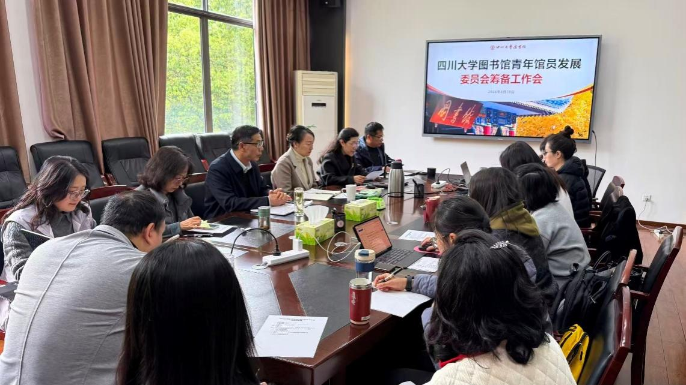

学院通知 · 科研创新
四川大学图书馆青年馆员发展委员会正式成立
发布时间：2026-03-26 10:28:07
为落实学校高质量发展要求与图书馆 “人才强馆” 战略， 大力 促进青年馆员成长发展，聚焦图书馆重点任务开展研究与创新实践，在图书馆党委、行政的直接关心与指导下，2026 年 3 月 18 日下午， “ 四川大学图书馆青年馆员发展委员会筹备会 ” 在工学图书馆 5 楼会议室召开。图书馆党委书记秦远清、馆长兰利琼、党委副书记兼纪委书记、副馆长杜小军、副馆长张盛强、工会主席韩夏及各中心青年馆员代表参加会议，会议由副馆长张盛强主持。 党委副书记兼纪委书记、副馆长杜小军 首先 宣读 了 《关于成立 “四川大学图书馆青年馆员发展委员会” 的决定》， 阐明 四川大学图书馆青年馆员发展委员会 （以下简称“委员会”） 成立的背景、意义与定位。 馆长兰利琼在讲话中对委员会的成立表示祝贺。她指出，青年馆员是图书馆事业发展的生力军与核心希望，图书馆始终将青年馆员培养 摆 在人才队伍建设的重要位置。她勉励青年馆员以委员会成立为契机，立足学校与图书馆发展大局，充分发挥青春活力与创新思维，将个人成长与图书馆发展同频共振，在实践中锤炼本领、担当作为，为建设世界一流大学图书馆贡献青年力量。 工会主席韩夏在发言中表示，工会将全力支持委员会各项工作，在合规范围内给予经费与资源保障， 希望委员会通过开展工作， 凝聚青年馆员力量，为青年馆员成长营造温暖、积极的氛围。 副馆长张盛强介绍了委员会的筹备情况及管理办法。 管理办法 经广泛调研、征求意见 和 多次研讨完善， 依据该办法，委员会将 秉持 “自主管理、自主发展、自主锻炼” 核心理念 ， 围绕组织业务、技能培训、学术交流、创新实践等开展工作，收集反映青年诉求，锻炼青年馆员综合能力，成为图书馆培养青年人才的重要渠道。 在 青年馆员 代表座谈环节， 各位 代表们 积极发言 。大家对委员会的成立 表示 期待， 同时 结合工作实际 提出 思考与建议。 大家 表示，将珍惜 委员会这个 平台，积极 参加相关 工作， 和青年同事一起努力 ，共同推动委员会建设 ，为 图书馆事业发展 贡献力量 。 接下来， 图书馆党委书记秦远清作总结 发言。 他指出， 委员会的成立是 落实“人才强馆”战略，实施“ 1+5”行动计划 的重要举措 ， 旨在 激发 青年馆员 青春力量，促进共同发展。同时，他 也 对青年馆员提出殷切期望与明确要求，强调青年馆员要坚持“有精神、有情怀、有本领、有智慧”的人生追求，涵养深厚的家国情怀，锤炼过硬的专业本领，培养科学的思维智慧，做到想干 事、能干事、 干成事、好共事。 他表示， 图书馆将全力为青年馆员成长搭建平台、提供支持，在经费、政策等方面给予 充分 保障，希望青年馆员以委员会为依托，凝聚力量、开拓创新，在图书馆高质量发展的征程中绽放青春光彩。 筹备会 还推选了委员会候选人。筹备会 结束后，委员会第一 次 全体会议随即召开。会议民主推选出委员会主任委员 、副主任委员。大家 围绕 委员会后续工作进行了讨论 。至此，四川大学图书馆青年馆员发展委员会正式成立， 这 标志着 四川大学 图书馆青年馆员 队伍建设 工作迈入新阶段。 未来，委员会将以服务青年馆员成长、助力图书馆发展为 工作 核心，充分发挥青年馆员的主体作用，搭建交流合作、实践创新的优质平台，激发青年馆员的职业潜能与创新活力，培养造就高素质的青年馆员队伍，为四川大学图书馆高质量发展提供坚实的人才支撑。
